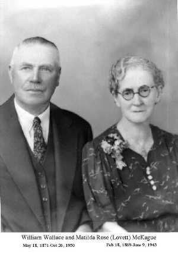

The Mystery McKagues 1

For those of you looking for this page, we have good news. The mystery McKagues are a mystery no longer. We now have them where they belong. You'll find them in our
"The McKagues from County Cavan"
tree.